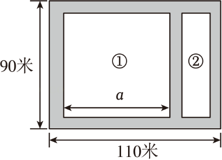
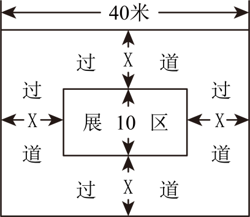
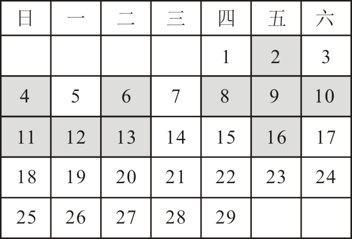
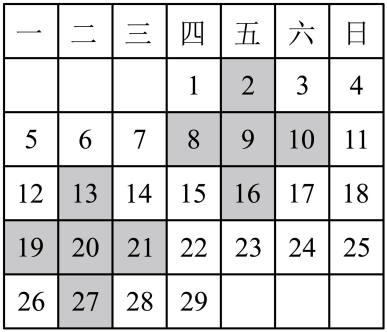
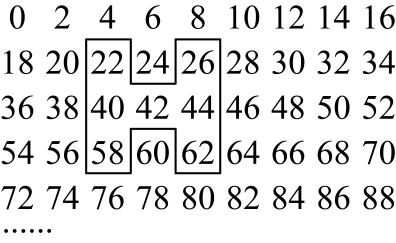
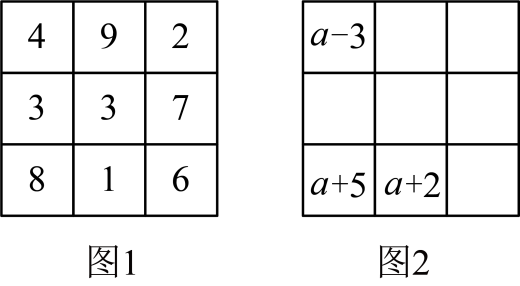
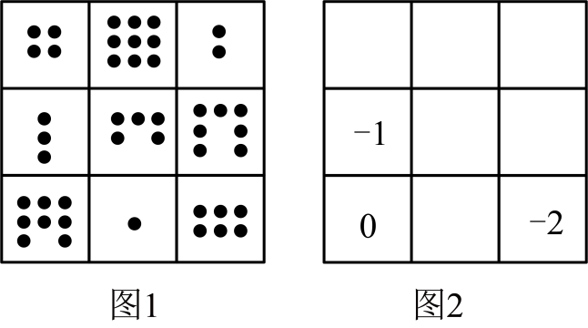
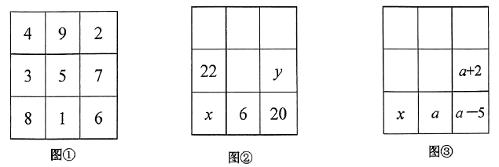
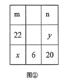
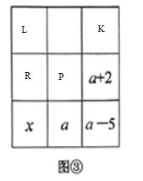

专题02 整式的应用（举一反三专项训练）
【北师大版2024】

【题型1 周长问题】 1
【题型2 面积问题】 5
【题型3 分段计费问题】 8
【题型4 方案选择】 13
【题型5 月历问题】 17
【题型6 数阵问题】 20
【题型7 数字问题】 25
【题型8 整除问题】 27
【题型9 幻方问题】 30

【题型1 周长问题】
【例1】（24-25七年级上·北京朝阳·期中）用6个如图①所示的长为a，宽为b的长方形，拼成一个如图②所示的图案，得到两个大小不同的长方形．

(1)请用含a，b的代数式，分别表示大长方形和小长方形的周长．
(2)若a=32，b=103，求两个长方形的周长差．
【答案】(1)6a+4b，6a−4b
(2)803
【分析】（1）根据图形，用含a，b的代数式分别表示出两个长方形的长和宽，再根据长方形的周长公式计算即可；
（2）根据“大长方形的周长−小长方形的周长”列式并化简，然后将a和b的值分别代入计算即可．
【详解】（1）解：由题意可知：
大长方形的周长为：22a+b+a+b=23a+2b=6a+4b，
小长方形的周长为：22a−b+a−b=23a−2b=6a−4b，
∴大长方形的周长为6a+4b，小长方形的周长为6a−4b；
（2）解：两个长方形的周长差
=6a+4b−6a−4b
=6a+4b−6a+4b
=8b，
当a=32，b=103时，
原式=8b=8×103=803，
∴两个长方形的周长差为803．
【点睛】本题主要考查了整式的加减运算，合并同类项，去括号，列代数式，整式的加减中的化简求值，代数式求值等知识点，弄清题意，找出题中的等量关系并正确列式是解题的关键．
【变式1-1】（24-25七年级上·安徽宣城·期中）为了节省材料，某水产养殖户利用水库的岸堤（岸堤足够长）为一边，用围网在水库中围成了如图所示的①、②、③三块长方形区域，这三块区域面积相等，其中区域③的一边长 CF为 a 米，另一边长BC为 b 米．

(1)宽DF的长度为 米；
(2)围成养殖场围网的总长度为多少米.（用含a，b的式子表示）
(3)当a=30、b=60时，求围网的总长度．
【答案】(1)2a
(2)围网总长度为8a+2b米
(3)当 a=30，b=60时，围网的总长度为360米
【分析】本题考查了列代数式、求代数式的值，理解题意，正确列出代数式，熟练掌握有理数的运算法则是解此题的关键．
（1）根据三块长方形区域面积相等列方程，利用等式的基本性质即可得到结论；
（2）根据长方形的性质即可得出围成养殖场围网的总长度；
（3）把a=30、b=60代入（2）中的代数式即可．
【详解】（1）解：由题意知CF=a米，BC=b米，
∵三块长方形区域面积相等，DF=HG=AE，
∴HG⋅FG=HG⋅GE=BC⋅CF=ab，
则FG=GE=12BC=12b，
∴DF⋅FG=ab，即DF×12b=ab，
∴DF=2a，
故答案为：2a；
（2）由（1）可知，DF=HG=AE=2a，FG=GE=12b，
∴围网总长度为3×2a+a+a+2×12b+b=8a+2b米；
（3）当a=30、b=60时，
围网的总长度为8a+2b=8×30+2×60=240+120=360米．
【变式1-2】（24-25七年级上·河南驻马店·期中）如图，一个长方形运动场被分割成A，A，B，B，C共5个区域，A区域是边长为am的正方形，C区域是边长为cm的正方形．

(1)①B区域长方形场地的长是___________m，宽是___________m；
②列式表示一个B区域长方形场地的周长，并将式子化简．
(2)列式表示整个长方形运动场的周长，并将式子化简；当a=4,c=2时，求整个长方形运动场的周长．
【答案】(1)①a+c，a−c；②4am
(2)32m
【分析】本题考查列代数式和代数式求值，理解拼图中各个区域之间的关系是解决问题的关键．
（1）①根据拼图中各个区域之间的关系得出答案；
②表示一个B区域长方形场地的长和宽，再求周长即可
（2）求出整个大长方形的长、宽，再求出周长，最后把a=4代入计算即可．
【详解】（1）解：①根据图形各个区域之间的关系可得，
B区长方形场地的长是a+cm，宽为a−cm，
故答案为：a+c，a−c；
②一个B区域长方形场地的周长为2a+c+a−c=4am．
（2）解：整个长方形运动场的长为(2a+c)m，宽为(2a−c)m，
因此，整个长方形运动场的周长为2[(2a+c)+(2a−c)]=8a(m)．
当a=4时，8a=32．
故整个长方形运动场的周长为32m．
【变式1-3】（24-25七年级上·江苏常州·期中）如图，某体育公园有一块长为110米，宽为90米的长方形运动场地．场地中间有两块运动区域，分别记作①号和②号区域．阴影部分为人行通道，两条横向通道和三条纵向通道的宽度均相等．已知①号区域的形状是正方形，边长为a米，②号区域的形状是长方形．

(1)当a=80时，人行通道的宽度为 ____米；②号区域的周长 ____米；
(2)求②号区域的周长（用含a的代数式表示）．
【答案】(1)5；190
(2)②号区域的周长3a−50米
【分析】本题主要考查了列代数式，求代数式的值，正方形与长方形的性质，熟练掌握长方形与正方形的性质是解题的关键．
（1）利用长方形与正方形的性质，利用大长方形的宽减去正方形的边长即得到两条人行通道的宽度，利用人行通道的宽度求得②号区域的宽，即可求出②号区域的周长；
（2）利用（1）中的方法求得人行通道的宽度，利用图中数据求得②号区域的宽，再利用长方形的周长公式解答即可．
【详解】（1）解：当a=80时，
人行通道的宽度为：90−80÷2=5（米），
②号区域的周长：2×110−80−5×3+80=190（米），
故答案为：5；190．
（2）由题意得：人行通道的宽度为：90−a÷2，
②号区域的长与①号区域的长相同，
∵两条横向通道和三条纵向通道的宽度均相等，
∴②号区域的宽为：110−a−3×90−a2=12a−25（米），
∴②号区域的周长为：2a+12a−25=3a−50（米）．
【题型2 面积问题】
【例2】如图，已知哈市某展览馆要对一个长方形展厅进行升级改造，展厅的长为40米，中间展区部分是长方形，其宽为10米，四周是等宽的过道（单位：米）．

(1)用含x的式子分别表示中间展区和过道的面积；
(2)若x=10，升级过道的费用为每平方米60元，升级展区的费用为每平方米200元，则升级这个展厅的总费用为多少元？
【答案】(1)400−20x，100x；
(2)100000元．
【分析】本题主要考查了列代数式，整式加减化简求值．
（1）根据中间展区是长为40−2x米，宽为10米的长方形，过道的面积为大长方形的面积减去小长方形的面积，列出代数式，即可得到答案；
（2）将x=10代入，过道面积乘以60元，展区面积乘以200，相加即可．
【详解】（1）解：中间展区的面积为：10×40−2x=400−20x，
过道的面积为：40×2x+10−400−20x=100x，
答：中间展区的面积为400−20x平方米，过道的面积为100x平方米．
（2）解：当x=10时，
100×10×60+400−20×10×200=100000（元），
答：升级这个展厅的总费用为100000元．
【变式2-1】如图，在长方形ABCD中，E，F分别是边AB，BC上一点，连接DE，DF．
按图中各部分尺寸解决下列问题：
(1)用含x的代数式表示阴影部分的面积；
(2)当x=2时，求阴影部分的面积．
【答案】(1)2x+16
(2)20
【分析】本题考查了代数式与求不规则图形的面积．解题的关键在于利用作差法将各规则图形的面积表示出来．
（1）不规则图形的面积可以用规则图形的面积作差得到，图中阴影部分的面积可看作由长方形的面积减去两个直角三角形的面积，即可得到含有的代数式；
（2）将x=2代入求解即可．
【详解】（1）解：阴影部分的面积：8×4−12×4x−12×8×4−x =32−2x−16+4x =2x+16
答：阴影部分面积为：2x+16．
（2）解：当x=2时，2x+16=2×2+16=20
答：阴影部分面积为20．
【变式2-2】（24-25七年级上·云南昆明·阶段练习）小颖家买了一套经济适用房，她准备将地面铺上地砖，地面结构如图所示，根据图中的数据（单位：m），解答下列问题：
(1)客厅的面积是______m2．
(2)用含x，y的式子表示这套房子的总面积（写出必要的过程，结果保留最简形式）．
【答案】(1)5xy
(2)5xy+22ym2
【分析】本题主要考查了列代数式，整式加减的应用，正确列出对应的代数式是解题的关键．
（1）根据长方形面积公式进行求解即可；
（2）分别求出卧室，卫生间，厨房的面积，即可求出房子的面积．
【详解】（1）解：由题意得，客厅的面积是5xym2，
故答案为：5xy；
（2）解：卧室面积为2+3⋅3y=15ym2，卫生间的面积为3ym2，厨房的面积为25y−3y=4ym2，
∴这套房子的总面积15y+3y+4y+5xy=5xy+22ym2．
【变式2-3】（24-25七年级上·广东肇庆·期中）某小区的两块紧挨在一起的长方形空地的平面图如图所示（图中长度单位：m），现该小区管理者要在此空地上修建一个半圆形花圃，其余部分进行硬化．

(1)求硬化部分的面积（用含x的代数式表示）；
(2)当x=10时，求硬化部分的面积（结果保留π）．
【答案】(1)6x−20−92πm2
(2)40−92πm2
【分析】本题考查列代数式、求代数式的值、整式的加减，根据图形正确列出代数式是解答的关键．
（1）根据图形，阴影部分的面积是两个长方形的面积和减去半圆面积，进而化简可求解；
（2）将x=10代入（1）中代数式求解即可．
【详解】（1）解：由图可知，阴影部分面积为
2x−2+4x−2−2−12π×2+422
=2x−4+4x−16−92π
=6x−20−92πm2；
（2）解：当x=10时，硬化部分的面积为6×10−20−92π=40−92πm2．
【题型3 分段计费问题】
【例3】（24-25七年级上·辽宁大连·期中）我市居民使用自来水按如下标准收费（水费按月缴纳）：
户月用水量 | 单价 |
不超过15m3的部分 | a元/m3 |
超过15m3但不超过20m3的部分 | 1.5a元/m3 |
超过20m3的部分 | 2a元/m3 |
(1)当a=2时，某用户一个月用了22m3水，求该用户这个月应缴纳的水费．
(2)设某户月用水量为x立方米，当x>20时，则该用户应缴纳的水费__________元（用含a，x的代数式表示）．
(3)当a=2时，甲、乙两用户一个月共用水40m3，已知甲用户缴纳的水费超过了30元，设甲用户这个月用水xm3，试求甲、乙两用户一个月共缴纳的水费（用含x的代数式表示）．
【答案】(1)该用户这个月应缴纳53元水费
(2)(2ax−17.5a)
(3)当15<x≤20时，缴水费(110−x)元；当20<x≤25时，缴水费(x+70)元；当25<x≤40时，缴水费(2x+45)元；
【分析】本题主要考查了用代数式表示，整式的加减，
（1）根据用水量的费用包括三部分，即15m3的费用，15m3和20m3之间的部分费用，超过20m3的部分的费用，再相加即可；
（2）根据（1）中的三部分相加，用含有a，x的代数式表示即可；
（3）分三种情况：15<x≤20，20<x≤25，25<x≤40，分别用代数式表示即可．
【详解】（1）解：2×15+2×1.5×(20−15)+2×2×(22−20)
=30+15+8
=53（元）
答：该用户这个月应缴纳53元水费．
（2）15a+(20−15)×1.5a+(x−20)×2a=2ax−17.5a（元）；
故答案为:2ax−17.5a；
（3）∵甲用户缴纳的水费超过了30元，
∴x>15
①15<x≤20，
甲：2×15+3×(x−15)=3x−15．
乙：15×2+5×3+4×(40−x−20)=125−4x．
共计：3x−15+125−4x=110−x．
②20<x≤25，
甲：2×15+3×5+4(x−20)=4x−35．
乙：2×15+3×(40−x−15)=105−3x．
共计：4x−35+105−3x=x+70．
③25<x≤40，
甲：2×15+3×5+4(x−20)=4x−35．
乙：2×(40−x)=80−2x．
共计：4x−35+80−2x=2x+45．
答：甲、乙两用户共缴纳的水费：
当15<x≤20时，缴水费(110−x)元；
当20<x≤25时，缴水费(x+70)元；
当25<x≤40时，缴水费(2x+45)元.
【变式3-1】（24-25七年级上·湖北武汉·阶段练习）学校计划订购数学益智玩具魔万和数独棋，经调查发现，同一款式的魔方和数独棋在甲、乙两家商店标价均相同，其中魔方每个标价10元，数独棋每个标价40元．两家商店分别展开了不同的促销活动，优惠方式如下：
甲商店：魔方和数独棋都按9折出售．
乙商店：买两个数独棋送一个魔方．
学校计划订购数独棋40个，魔方若干（多于20）个，单独在甲商店或者乙商店购买．
(1)若订购魔方的数量是30个，如果在甲商店订购的总费用是______元，在乙商店购买魔方和数独棋的总费用是______元？
(2)当订购魔方的数量是多少个时，在甲、乙两家商店购买魔方和数独棋的总费用相同？
(3)根据魔方的购买数量，设计一种省钱的订购方案．
【答案】(1)1710，1700
(2)40个
(3)当x>40时，甲商店订购省钱；当x=40时，总费用相同；当x<40时，乙商店订购省钱；
【分析】此题考查了有理数的混合运算的实际应用，一元一次方程的实际应用，整式的加减的应用；
（1）根据优惠方式列式计算即可求解；
（2）设订购魔方的数量是x个时，在甲、乙两家商店购买魔方和数独棋的总费用相同，列出一元一次方程，解方程，即可求解；
（3）分别列出单独在甲商店或者乙商店购买所需费用，相减得x−40，进而分类讨论进行判断，即可求解．
【详解】（1）解：订购魔方的数量是30个，
在甲商店订购的总费用是40×40×0.9+30×10×0.9=1710（元）；
在乙商店购买魔方和数独棋的总费用是40×40+30−402×10=1700（元）；
故答案为：1710，1700．
（2）解：设订购魔方的数量是x个时，在甲、乙两家商店购买魔方和数独棋的总费用相同，
根据题意得，40×40+10x×0.9=40×40+x−402×10
解得x=40
∴当订购魔方的数量是40个时，在甲、乙两家商店购买魔方和数独棋的总费用相同．
（3）解：学校单独在甲商店或者乙商店购买，设订购魔方的数量是x个，
依题意，在甲商店订购的总费用是40×40×0.9+x×10×0.9=9x+1440
在乙商店订购的总费用是40×40+x−402×10=10x+1400,
10x+1400−9x+1440=x−40
∴当x>40时，x−40>0，在甲商店订购省钱；
当x=40时，甲、乙两家商店购买魔方和数独棋的总费用相同
当x<40时，x−40<0，在乙商店订购省钱.
【变式3-2】某经销商去水产批发市场采购大闸蟹，他看中了A、B两家的某品质相近的大闸蟹，零售价均为60元/千克，批发价各不相同．
A家规定：批发数量在100千克以内（含100千克）时，顾客购买的大闸蟹均按零售价的92%优惠：批发数量超过100千克但不超过200千克时，顾客购买的大闸蟹均按零售价的90%优惠；批发数量超过200千克时，顾客购买的大闸蟹均按零售价的88%优惠；
B家规定：优惠方案如下表：
数量范围（千克） | 0～50部分 | 50以上～150部分 | 150以上部分 |
价格（元） | 零售价的95% | 零售价的85% | 零售价的75% |
【表格说明：价格分段计算，如：某人批发大闸蟹180千克，则总费用=60×95%×50+60×85%×
100+60×75%×180−150】
(1)如果他批发x千克大闸蟹（0<x<50），求他在A、B两家批发各需要多少元？（用x含的式子表示）
(2)如果他批发x千克大闸蟹（150<x<200），求他在A、B两家批发各需要多少元？（用含x的式子表示）
(3)现在他要批发195千克大闸蟹，你能帮他选择在哪家批发更省钱吗？请说明理由．
【答案】(1)在A家需要55.2x元，在B家需要57x元
(2)在A家需要54x元，在B家需要45x+1200元
(3)选择在B家批发更省钱，理由见解析
【分析】（1）根据题意可直接进行求解；
（2）根据题意可直接进行求解；
（3）把x=195代入（2）中代数式求解即可．
【详解】（1）解：由题意得，当0<x<50时，
在A家需要60×92%x=55.2x（元），在B家需要60×95%x=57x（元）．
（2）解：由题意得，当150<x<200时，
在A家需要60×90%x=54x（元），
在B家需要60×50×95%+60×85%×100+60×75%×x−150=45x+1200元．
（3）解：当x=195时，
在A家需要54×195=10530（元），
在B家需要45×195+1200=9975（元）
因为10530>9975
所以选择在B家批发更省钱．
【点睛】本题主要考查整式加减运算的应用，熟练掌握整式的加减运算是解题的关键．
【变式3-3】（24-25七年级上·湖南株洲·期中）为鼓励居民节约用电，某市电力公司采用分段计费方式计算电费：每月用电不超过180度时，按每度0.5元计费：每月用电超过180度但不超过280度时，其中的180度仍按原标准收费，超过部分按每度0.6元计费．收费标准如表：
用电量 | 不超过180度 | 超过180度但不超过280度的部分 | 超过280度的部分 |
收费标准（元/度） | 0.5 | 0.6 | 0.8 |
(1)若小明家10月用电量为160度，则他们家10月的电费是_____元．
(2)若小明家11月用电量为230度，则他们家11月的电费是_____元．
(3)若小明家12月用电量为x度；请用含x的代数式表示他们家12月应缴的电费．
【答案】(1)10月的电费是80元
(2)11月的电费是120元
(3)见详解
【分析】本题考查了列代数式，有理数的混合运算，正确掌握相关性质内容是解题的关键．
（1）先理解题意，再结合10月用电量为160度，进行列式计算，即可作答．
（2）先理解题意，再结合11月用电量为230度，进行列式计算，即可作答．
（3）理解题意，进行分类讨论，根据不同情况进行列式化简，即可作答．
【详解】（1）解：依题意，160×0.5=80（元）
∴10月的电费是80元；
（2）解：依题意，230−180×0.6+180×0.5=120（元）
∴11月的电费是120元；
（3）解：依题意，当0≤x≤180时，则电费是0.5x元；
当180<x≤280时，
∴180×0.5+x−180×0.6=90+0.6x−108=0.6x−18，
则电费是0.6x−18元；
当280<x时，
∴180×0.5+280−180×0.6+x−280×0.8=90+60+0.8x−224=0.8x−74，
则电费是0.8x−74元．
【题型4 方案选择】
【例4】（24-25七年级上·天津河东·期末）某商场开展促销活动，出售甲、乙两种商品，活动方案有如下两种：
甲商品 | 乙商品 | |
售价（单位：元） | 100 | 20 |
促销方案一 | 买一件甲商品，赠送一件乙商品 | |
促销方案二 | 甲商品和乙商品都打九折 | |
（备注：参加方案一，则不能参加方案二；参加方案二，则不能参加方案一）
(1)若某单位购买甲商品x件，购买乙商品的件数比甲商品多20件，
选用方案一需花费________元；
选用方案二需花费________元；（用含x的代数式填空）
(2)在（1）问的条件下，请问购买甲商品多少件时，选择方案一与选择方案二的花费相同？
(3)请根据购买甲商品的件数x的不同范围，直接写出选择哪种促销方案更合适．
【答案】(1)100x+400，108x+360
(2)5件
(3)购买甲商品小于5件时选择方案二，多大5件时选择方案一
【分析】本题考查了列代数式，代数式求值，一元一次方程的应用；
（1）设购买甲件商品x件， 购买乙商品的件数(x+20)件，求出方案一费用100x+20×20；方案二费用：[100x+20(x+20)]×0.9 ，
（2）根据（1）的代数式列出方程，即可求解；
（3）用方案一的费用减去方案二的费用，进而得出结论．
【详解】（1）设购买甲件商品x件， 购买乙商品的件数(x+20)件，
选用方案一需花费100x+20×20=100x+400元；
选用方案二需花费100x+20x+20×0.9=108x+360元；
故答案为：100x+400，108x+360．
（2）解：依题意100x+20×20=[100x+20(x+20)]×0.9，
即100x+400=108x+360
解得：x=5
答：购买甲商品5件时，选择方案一与选择方案二的花费相同；
（3）100x+20×20−[100x+20(x+20)]×0.9=40−8x，
当x < 5时，40−8x > 0，方案一花费比方案二大，
购买甲商品小于5件时选择方案二促销方案才能获得最大优惠，
当x > 5时，40−8x < 0，方案一花费比方案二小，
大于5件时选择方案一促销方案才能获得最大优惠．
【变式4-1】（24-25七年级上·湖南衡阳·期末）某学校准备组织部分教师到郴州旅游，现联系了甲、乙两家旅行社，两家旅行社报价均为300元/人，同时两家旅行社都对10人以上的团体推出了优惠方案：甲旅行社对每位游客八折优惠；而乙旅行社是免去一位老师的费用，其余老师九折优惠．
(1)如果设参加旅游的老师共有xx>10人，则用含x的代数式分别表示甲、乙旅行社的费用；
(2)假如某校组织20名教师到郴州旅游，该校选择哪一家旅行社比较优惠？请说明理由．
【答案】(1)甲旅行社240x元，乙旅行社270x−270元
(2)甲旅行社比较优惠
【分析】（1）根据八折的意义，得甲旅行社的费用为300×0.8×x=240x元，乙旅行社的费用为x−1×300×0.9=270x−270元，求解即可；
（2）分别算出两个旅行社的正常费用，进行比较即可求解．
本题主要考查列代数式在实际中的运用，求代数式的值，理解数量关系，正确列出代数式是解题的关键．
【详解】（1）解：根据八折的意义，得甲旅行社的费用为300×0.8×x=240x元，
乙旅行社的费用为x−1×300×0.9=270x−270元；
（2）解：当x=20时，
∴甲旅行社的费用为：240x=4800（元），
乙旅行社的费用为：270x−270=5130（元），
∵4800<5130，
∴甲旅行社比较优惠．
【变式4-2】某校决定为体育组添置一批体育器材．学校准备在网上订购一批某品牌足球和跳绳，在查阅天猫网店后发现足球每个定价140元，跳绳每条定价30元．现有A、B两家网店均提供包邮服务，并提出了各自的优惠方案．A网店：买一个足球送一条跳绳；B网店：足球和跳绳都按定价的90%付款．已知要购买足球60个，跳绳x条（x>60）．
(1)若在A网店购买，需付款 元（用含x的代数式表示）；若在B网店购买，需付款 元（用含x的代数式表示）；
(2)若x=100时，通过计算说明此时在哪家网店购买较为合算？
(3)当x=100时，你能给出一种更为省钱的购买方案吗？试写出你的购买方法，并计算需付款多少元？
【答案】(1)6600+30x，7560+27x
(2)A网店
(3)省钱的购买方案是：在A网店购买60个足球配送，60个跳绳，再在B网店购买40个跳绳，付款9480元
【分析】本题考查的是列代数式、代数式求值，解题的关键是∶
（1）由题意在A店购买可列式：60×140+x−60×30=6600+30x元；在网店B购买可列式：60×140+30x×0.9=7560+27x元；
（2）将x=100分别代入A网店，B网店的代数式计算，再比较即可求解；
（3）由于A店是买一个足球送跳绳，B店是足球和跳绳都按定价的90%付款，所以可以在A店买60个足球，剩下的40条跳绳在B店购买即可．
【详解】（1）解：A店购买可列式：60×140+x−60×30=6600+30x元；
在网店B购买可列式：60×140+30x×0.9=7560+27x元；
故答案为：6600+30x，7560+27x．
（2）解：当x=100时，
在A网店购买需付款：6600+30×100=9600（元），
在B网店购买需付款：7560+27×100=10260（元），
∵9600<10260，
∴当x=100时，应选择在A网店购买合算．
（3）解：由（2）可知，当x=100时，在A网店付款9600元，在B网店付款10260元，
在A网店购买60个足球配送60个跳绳，再在B网店购买40个跳绳合计需付款：
140×60+30×40×0.9=9480，
∵9480<9600<10260，
∴省钱的购买方案是：在A网店购买60个足球配送，60个跳绳，再在B网店购买40个跳绳，付款9480元．
【变式4-3】（24-25七年级上·福建厦门·期末）某化工厂每天产生超过100吨的工业废水，为使排放的工业废水达到国家的排放标准，建设了一座工业废水处理站．该处理站无论是否处理废水，都需要支付设备维护费用200元/天，且处理废水还需其他费用5元/吨．随着生产规模的扩大，该废水处理站已无法完成当天工业废水的处理任务，需要将一部分废水交给第三方企业处理，该企业处理工业废水的价格如表二所示．
表二
收费方式 | 废水处理量/吨 | 费用 |
第一阶梯 | 0～50 | 500元 |
第二阶梯 | 50～100的部分 | 5元/吨 |
第三阶梯 | 100以上的部分 | 4元/吨 |
(1)设某天有m吨废水在处理站处理，直接写出处理站处理废水产生的总费用；
(2)若某天该工厂将一半的废水由处理站处理，另一半废水由第三方企业处理，该废水处理站处理废水产生的总费用与第三方企业处理废水产生的费用相同，求这一天该工厂产生的废水总量；
(3)经测算，扩大生产规模后，每天产生的废水量超过该处理站日废水处理量至少50吨，为实现降本增效，工厂设计了两种废水处理方案：方案A：超出该处理站的日废水处理量的废水交给第三方企业处理；方案B：保留处理站的设备，但废水全部交给第三方企业处理．根据以上信息，请帮助工厂选择最优方案，并说明理由．
【答案】(1)处理站处理废水产生的总费用为200+5m元
(2)这一天该工厂产生的废水总量为300吨
(3)该工厂应选择B方案，理由见详解
【分析】本题主要考查一元一次方程的应用及整式的加减运算，解题的关键是理解题意；
（1）根据“设备维护费用200元/天，且处理废水还需其他费用5元/吨”可进行求解；
（2）设这一天该工厂产生的废水总量为x吨，根据“工厂每天产生超过100吨的工业废水”可知：x>100，由题意可分①当第三方企业处理的废水在第二阶梯时，②当第三方企业处理的废水在第三阶梯时，然后分别求解即可；
（3）设该工厂每天产生的废水总量为t吨，处理站日废水处理量为m吨，然后分类表示出A、B方案的费用，进而问题可求解．
【详解】（1）解：由题意得：处理站处理废水产生的总费用为200+5m元；
（2）解：设这一天该工厂产生的废水总量为x吨，根据“工厂每天产生超过100吨的工业废水”可知：x>100；由题意可分：
①当第三方企业处理的废水在第二阶梯时，则有：
200+5×x2=500+5x2−50，该方程无解，故舍去；
②当第三方企业处理的废水在第三阶梯时，则有：
200+5×x2=500+5×50+4x2−100，
解得：x=300；
答：这一天该工厂产生的废水总量为300吨．
（3）解：设该工厂每天产生的废水总量为t吨，处理站日废水处理量为m吨，由题意得：t>100，t−m>50，
当第三方企业处理的废水在第二阶梯时，则有：
A方案产生的总费用为200+5m+500+5t−m−50=5t+450（元）；
B方案产生的总费用为200+500+5×50+4t−100=4t+550（元）；
∵5t+450−4t+550=t−100>0，
∴B方案更划算；
当第三方企业处理的废水在第三阶梯时，则有：
A方案产生的总费用为200+5m+500+5×50+4t−m−100=4t+m+550（元）；
B方案产生的总费用为200+500+5×50+4t−100=4t+550（元）；
∵4t+m+550−4t+550=m>0，
∴B方案更划算；
综上所述：该工厂应该选择B方案更划算．
【题型5 月历问题】
【例5】如图所示的是2024年2月份的月历，其中“U型”、“十字型”两个阴影图形分别覆盖其中五个数字（“U型”、“十字型”两个阴影图形可以重叠覆盖，也可以上下左右移动），设“U型”覆盖的五个数字之和为S1，“十字型”覆盖的五个数字之和为S2．若S1+S2=176，则S2−S1的最大值为（ ）

A．39 B．44 C．65 D．71
【答案】B
【分析】本题考查了数字类规律探索，整式的加减的应用，设“U型”中间数为x，“十字型”中间数为y，则5x−14+5y=176，求出x+y=38，表示出S2−S1=5y−x+14，由图形可得：y的最大值为22，此时x=38−y=16，代入计算即可得出答案．
【详解】解：设“U型”中间数为x，“十字型”中间数为y，
由题意得：S1=x+x−1+x−8+x+1+x−6=5x−14,S2=y+y−1+y+1+y−7+y+7=5y,
∵S1+S2=176，
∴5x−14+5y=176，
∴x+y=38，
∴S2−S1=5y−5x−14=5y−x+14，
由图形可得：y的最大值为22，此时x=38−y=38−22=16，
∴S2−S1=5y−x+14=5×22−16+14=44，
∴S2−S1的最大值为44，
故选：B．
【变式5-1】在某月的月历内有一正方形方框． 已知方框里有4个数字，分别为a，b，c，n，这四个数字在方框内的位置如图所示，若用数字n分别表示a，b，c，则a+b+c= （用含有n的式子表示结果）．

【答案】3n−16/-16+3n
【分析】根据4个数字的位置以及日历表的特点，分别用含n的代数式表示出a,b,c，然后根据整式的加法运算进行计算即可求解．
【详解】解：∵a=n−1−7=n−8,b=a+1=n−8+1=n−7,c=n−1，
∴a+b+c=n−8+n−7+n−1=3n−16．
故答案为：3n−16．
【点睛】本题考查了列代数式，理解日历中数字的特点是解题的关键．
【变式5-2】（24-25七年级上·甘肃庆阳·期末）如图，这是2024年2月份的月历，用带阴影的十字框框出5个数，十字框可移动位置．若设中间的数为a，则这5个数字之和为 （用含a的代数式表示）．

【答案】5a
【分析】本题考查了列代数式，整式的加法，根据题意列出十字阴影框出的数字的代数式是解题的关键．
先用代数式表示出十字阴影框出的数字，再求和即可得到答案．
【详解】解：∵中间的数为a，
∴其余4个数为a−1,a+1,a−7,a+7，
∴a−1+a+1+a−7+a+7+a=5a，
∴5个数字之和为5a，
故答案为：5a ．
【变式5-3】如图，表中给出的是某月的月历，任意选取“U”型框中的7个数（如阴影部分所示），请你运用所学的数学知识来研究，发现这7个数的和不可能的是（ ）．
一 | 二 | 三 | 四 | 五 | 六 | 日 |
1 | 2（阴影） | 3 | 4（阴影） | 5 | ||
6 | 7 | 8 | 9（阴影） | 10 | 11（阴影） | 12 |
13 | 14 | 15 | 16（阴影） | 17（阴影） | 18（阴影） | 19 |
20 | 21 | 22 | 23 | 24 | 25 | 26 |
27 | 28 | 29 | 30 | 31 |
|
A．70 B．78 C．84 D．105
【答案】B
【分析】由图可知U型框的上下相邻的两个格子之间，下面的格子比上面的格子大7，可设U型框最上面一行左边的数字为a，则最上面一行，右边的数字为a+2，中间一行的左边的数字为a+7，右边的数字为a+9，最下边一行左边的数字为a+14，中间的数字为a+15，右边的数字为a+16，由此求解即可．
【详解】解：由图可知U型框的上下相邻的两个格子之间，下面的格子比上面的格子大7，
∴可设U型框最上面一行左边的数字为a，则最上面一行，右边的数字为a+2，中间一行的左边的数字为a+7，右边的数字为a+9，最下边一行左边的数字为a+14，中间的数字为a+15，右边的数字为a+16，
∴这7个数的和为a+a+2+a+7+a+9+a+14+a+15+a+16=7a+63，
当a=1时，7a+63=70，故A选项不符合题意；
当a=3时，7a+63=84，故C选项不符合题意；
当a=6时，7a+63=105，故D选项不符合题意；
当7a+63=78时，a=157不是整数，故B选项符合题意；
故选B．
【点睛】本题主要考查了列代数式和整式加减的应用，以及代数式求值，解题的关键在于能够正确读懂题意．
【题型6 数阵问题】
【例6】（24-25七年级上·陕西西安·阶段练习）如图是由非负偶数排成的数阵：

(1)填空：图中“H”形框中七个数的和是中间数的______倍；
(2)在数阵中任意做一个这样的“H”形框，（1）中的关系是否仍成立？并写出理由；
(3)用这样的“H”形框能框出和为2023的七个数吗？如果能，求出这七个数中间的数；如果不能，请写出理由．
【答案】(1)7
(2)仍成立，理由见解析
(3)不能框出和为2023的七个数，理由见解析
【分析】本题主要考查了整式加减的应用，有理数四则混合运算的应用，一元一次方程的应用，解题的关键是理解题意，列出算式或方程，准确计算．
（1）根据题意列出算式进行计算即可；
（2）根据题意列出代数式，求出七个数的和，然后进行判断即可；
（3）设中间数为x，根据七个数的和为2023，列出方程，解方程即可．
【详解】（1）解：22+26+40+42+44+58+62÷42=294÷42=7，
答：七个数的和为是中间数的7倍，
故答案为：7；
（2）解：仍成立．
理由：设中间数为x，则另六个数为x−20，x−16，x−2，x+2，x+16， x+20，
则七个数的和为：
x−20+x−16+x−2+x+x+2+x+16+x+20=7x，
故七个数的和为是中间数的7倍．
（3）解：设中间数为x，依题得7x=2023，
解得：x=289，
因为289是奇数，不存在这样的数，
故不能框出和为2023的七个数．
【变式6-1】把正整数1，2，3，4，…，2020排列成如图所示的一个数表．
1 |
| 4 | 5 | 6 | 7 | |
8 |
| 11 | 12 | 13 | 14 | |
15 | 16 | 17 | 18 | 19 | 20 | 21 |
22 | 23 | 24 | …… |


用一个正方形在表中任意框住4个数（如图），把其中最小的数记为x，用含x的式子表示被框住的4个数之和是 ．
【答案】4x+16
【分析】根据题意可用x表示出与x相邻右面的数、与x相邻下面的数和x对角的数，再相加即可．
【详解】把其中最小的数记为x
∴相邻右面的数为x+1, 相邻下面的数为x+7，对角的数为x+8，
∴4个数之和是x+x+1+x+7+x+8=4x+16．
故答案为：4x+16．
【点睛】本题考查整式加法的应用．根据题意用x表示出其它三个数是解题关键．
【变式6-2】（24-25七年级上·四川·期中）把正整数1，2，3，4，…，排列成如图1所示的一个表，从上到下分别称为第1行、第2行、…，从左到右分别称为第1列、第2列、…．用图2所示的方框在图1中框住表中的16个数，把其中没有被阴影覆盖的四个数分别记为A、B、C、D．

(1)在图1中，2024排在第 行，第 列；
(2)A−B+C−D的值是否为定值？如果是，请求出它的值；如果不是，请说明理由；
(3)若将图1中的偶数都改为原数的相反数，奇数不变．
①设此时图1中排在第m行第n列的数（m为正奇数，n为正整数）为w，请用含m、n的式子表示w；
②此时A−B+C−D的值能否为2020？如果能，请求出A所表示的数；如果不能，请说明理由．
【答案】(1)290，1
(2)是定值，0
(3)①当n为奇数时，w=7m+n−7；当n为偶数时，w=7−7m−n；②不能，见解析
【分析】本题考查规律型问题，需要用代数式表示出一般规律，并能构建等式通过解简易方程求值，解题的关键是理解题意，学会探究规律、利用规律解决问题，学会探究复杂问题中的等量关系．
（1）探究规律，利用规律即可解决问题；
（2）分别用含x的代数式表示出A、B、C、D，然后列出代数式，化简即可解决问题；
（3）①分奇数、偶数两种情形讨论即可；②分奇数、偶数两种情形讨论，分别构建简单的等量关系即可解决问题；
【详解】（1）解：∵2024÷7=289⋯⋯1，
∴2024排在第290行，第1列；
（2）解：设A表示的数为x，那么B表示的数为x+9，C表示的数为x+22，D表示的数为x+13，
∴A−B+C−D=x−x+9+x+22−x+13=0，是定值；
（3）解：①解法一：
当n为奇数时，w=7m−1+n=7m+n−7
当n为偶数时，w=−7m−1+n=7−7m−n
解法二：w=−1n+1⋅7m−1+n
②不能，理由：
分类讨论：ⅰ当A，C为偶数，B，D为奇数时，
此时设A表示的数为a，则B表示的数为−a+9，C表示的数为a−22，D表示的数为−a+13，
∴A−B+C−D=a−−a+9+a−22−−a−13=2020，
解得：a=509.5，
∴此时不符合题意；
ⅱ当A，C为奇数，B，D为偶数时，
此时设A表示的数为b，则B表示的数为−a+9，C表示的数为b+22，D表示的数为−b+13，
∴A−B+C−D=b−−a+9+b+22−−b+13=2020，
解得：b=494，
∴A表示的数为494，与A为奇数矛盾，
∴此时不符合题意．
综上可知A−B+C−D的值不能为2020．
【变式6-3】将连续的自然数1到150按图1的方式排列成一个方阵：

(1)在图1中，第6行的第3个数是______，第20行的最后一个数是______；
(2)如图2，用一个正方形在该方阵中任意框出9个数，请用代数方法说明这9个数之和一定是9的倍数；
(3)如图3，若用如图所示的长方形在该方阵中任意框出6个数，这6个数之和能等于156吗？如果能，请求出这6个数；如果不能，请说明理由．
【答案】(1)33；120
(2)见详解
(3)这6个数为22、23、24、28、29、30
【分析】（1）根据方阵的特点可知每一行的开头数字为6n−5，最后一个数字是6n，由此问题可求解；
（2）设任意框出的9个数中的第一个数为x，则剩下的8个数分别为x+1、x+2、x+6、x+7、x+8、x+12、x+13、x+14，然后分别把它们都加起来，进而问题可求解；
（3）由题意可分当框出的6个数都在一排时，当框出的6个数分为上下两排，当框出的6个数分为三排时，然后分类求解即可．
【详解】（1）解：由方阵的特征可知：每一行的开头数字为6n−5，最后一个数字是6n，
∴第6行的第3个数是6×6−3=33，第20行的最后一个数是6×20=120；
故答案为33；120；
（2）解：设任意框出的9个数中的第一个数为x，则剩下的8个数分别为x+1、x+2、x+6、x+7、x+8、x+12、x+13、x+14，
∴x+x+1+x+2+x+6+x+7+x+8+x+12+x+13+x+14=9x+63=9x+7，
∴这9个数之和一定是9的倍数；
（3）解：由题意可分①当框出的6个数都在一排时，则设第一个数为m，则剩下的5个数为m+1、m+2、m+3、m+4、m+5，
∴m+m+1+m+2+m+3+m+4+m+5=156
解得：m=472，
∴不存在6个数的和为156；
②当框出的6个数分为上下两排时，则设第一个数为m，则剩下的5个数为m+1、m+2、m+6、m+7、m+8，
∴m+m+1+m+2+m+6+m+7+m+8=156
解得：m=22，
∴当这6个数为22、23、24、28、29、30时，它们的和能为156；
③当框出的6个数分为三排时，则设第一个数为m，则剩下的5个数为m+1、m+6、m+7、m+12、m+13，
∴m+m+1+m+6+m+7+m+12+m+13=156
解得：m=392，
∴不存在6个数的和为156；
综上所述：当这6个数为22、23、24、28、29、30时，它们的和能为156．
【点睛】本题主要考查一元一次方程的应用，熟练掌握一元一次方程的应用是解题的关键．
【题型7 数字问题】
【例7】（24-25七年级上·陕西安康·期末）一个三位数，它的个位数字是a，十位数字是个位数字的2倍多1，百位数字比个位数字大4．
(1)用含a的式子表示这个三位数是______；
(2)若交换个位数字和百位数字，其余不变，则新得到的三位数比原来的三位数减少了多少？
【答案】(1)121a+410
(2)新得到的三位数比原来的三位数减少了396
【分析】本题主要考查代数式的运用，掌握代数式表示数或数量关系的方法是关键．
（1）根据题意，运用字母表示数即可求解；
（2）运用整式的加减运算法则计算即可．
【详解】（1）解：个位数字是a，
十位数字是个位数字的2倍多1，则十位数字为：2a+1，
百位数字比个位数字大4，则百位数字为：a+4，
∴这个三位数字表示为：a+102a+1+100a+4，
整理得，121a+410，
故答案为：121a+410；
（2）解：交换个位数字和百位数字，其余不变，则新数字为：a+4+102a+1+100a，
整理得，121a+14，
∴121a+410−121a−14=396，
∴新得到的三位数比原来的三位数减少了396．
【变式7-1】（24-25七年级上·黑龙江哈尔滨·期末）一个三位数，百位上的数字是a，十位上的数字是百位上的数字的2倍，个位上的数字比十位上的数字小1，这个三位数可以表示为（ ）
A．122a−1 B．121a−1 C．5a−1 D．111a−1
【答案】A
【分析】本题考查了用代数式表示数；解题的关键是掌握数位上的数字代表的意义．根据题意分别求出各自数位上的数字，然后根据数位代表的意义表示出该数即可．
【详解】解：∵百位上的数字是a，十位上的数字是百位上的数字的2倍，个位上的数字比十位上的数字小1，
∴十位数字为：2a，个位数字为：2a−1，
∴该数为：100a+10×2a+2a−1=122a−1，
故选：A．
【变式7-2】（24-25七年级上·河南郑州·期中）一个三位数，个位数字为a，百位数字是b，把这个数的个位数字与百位数字对调后，得到一个新数，则新数与原数的差是（ ）
A．99a−99b B．99b−99a C．99a+99b D．无法确定
【答案】A
【分析】本题考查了列代数式，整式的加减运算，熟练掌握三位数的表示方法和整式的加减运算法则是解题的关键．设十位数为c，则这个数为100b+10c+a，当把这个数的个位数字与百位数字对调后，这个数为100a+10c+b，再利用整式的加减计算求解．
【详解】解：设十位数为c，则这个数为100b+10c+a，
当把这个数的个位数字与百位数字对调后，这个数为100a+10c+b，
∴新数与原数的差：100a+10c+b−100b+10c+a=99a−99b，
故选：A．
【变式7-3】（24-25七年级上·全国·课后作业）魔术师说：“请你任想一个两位数，将十位数字乘2，然后加3，将所得新数乘5，最后将得到的数加个位数字，只要告诉我计算结果，我就能知道你心里想的两位数．”请你解释这个魔术背后的数学道理．
【答案】见解析
【分析】此题考查整式的加减混合运算，掌握运算方法，理解题意列式计算是解决问题的关键．
设这个两位数的十位数字为a，个位数字为b，则此两位数为10a+b，根据题意列出算式进一步计算得出答案即可．
【详解】解：设这个两位数的十位数字为a，个位数字为b，则此两位数为10a+b，
则计算结果为(2a+3)×5+b=10a+b+15，
只要将结果减15，就得到10a+b，即为原来的两位数．
【题型8 整除问题】
【例8】（24-25八年级下·重庆渝北·期中）一个四位正整数的各个数位上的数字均不为0，若满足千位数字与个位数字之和等于百位数字与十位数字之和，则称这个四位数M为“至善数”．将“至善数”M=abcd的千位数字与十位数字对调，百位数字与个位数字对调得到一个新的四位数N．
（1）若N能被9整除，且a≠d，则a+d= ；
（2）在（1）的条件下，若FM=M+N11为整数，则满足条件的所有M的最小值为 ．
【答案】 9 1188
【分析】本题主要考查了数字变化的规律，整式加减的应用，正确理解新定义的规定并熟练应用是解题的关键．
（1）利用“至善数”的定义和被9整除的条件，结合a+d的可能值求解；
（2）根据题意表示出M，N，根据“至善数”的定义分析M+N，再利用数位上的数字的特征和整除的特性解答即可．
【详解】解：（1）∵M是“至善数”，M=1000a+100b+10c+d，N=1000c+100d+10a+b
∴a+d=b+c．
∵N能被9整除，
∴1000c+100d+10a+b能被9整除，
∵1000c+100d+10a+b=999c+99d+9a+a+b+c+d=999c+99d+9a+2a+d，
∴2a+d能被9整除，
又∵a≠d，且a，d均是不为0的一位整数，
∴a+d=9．
故答案为：9．
（2）FM=M+N11
=1000a+100b+10c+d+1000c+100d+10a+b11
=1000a+c+100b+d+10a+c+b+d11
=1010a+c+101b+d11
=92a+c+9b+d+2b+d−2a+c11，
∵FM是整数，
∴2b+d−a−c能被11整除，
又∵a+d=b+c=9，
∴当a=b=1，c=d=8时，M最小，此时M=1188．
故答案为：1188．
【变式8-1】（2025·河南洛阳·三模）一个正两位数M，它的个位数字是a+1，十位数字是a，把M十位上的数字与个位上的数字交换位置得到新两位数N，若M+N的值能被13整除，则a的值是 ．
【答案】6
【分析】本题考查整式的加减运算，因式分解的应用，求出M+N的值，因式分解后，根据M+N的值能被13整除可得出2a+1=13，进而可求出a的值．
【详解】解：正两位数M=10a+(a+1)=11a+1，
新两位数N=10(a+1)+a=11a+10，M+N=(11a+1)+(11a+10)=22a+11=11(2a+1)，
因为M+N的值能被13整除，且a为整数，1≤a+1≤9，1≤a≤8，
所以2a+1=13，
解得a=6．
故答案为：6．
【变式8-2】（24-25七年级下·北京房山·期末）对于一个四位正整数T，若它的千位数字比个位数字大6，百位数字比十位数字大2，则称正整数T为“M数”．
（1）最小的“M数”为____________；
（2）一个“M数”A的千位数字为a，百位数字为b，十位数字为c，个位数字为d (a≠b)，记XA=a+b+c+d,YA=a−b，若YAXA+8能被8整除，则满足条件的A的最大值为____________．
【答案】（1）6200；（2）9753
【分析】本题考查整式的加减，代数式求值等知识，读懂题意，审清概念是解题的关键．
（1）根据“千位数字比个位数字大6，百位数字比十位数字大2”可知：当个位数字和十位数字都是0，取得最小的“M数”，从而得解；
（2）根据题意可知a−d=6,b−c=2，从而代入XA=a+b+c+d消去c和d，从而得到YA=2a+ba−b，要使得A取最大值，则千位数字a取9，由a≠b可让b=8、7……依次判断即可．
【详解】解：（1）∵千位数字比个位数字大6，百位数字比十位数字大2，
∴当个位数字和十位数字都是0时，千位数字是6，百位数字是2，此时取得最小的“M数”，最小的“M数”为6200，
（2）一个“M数”A的千位数字为a，百位数字为b，十位数字为c，个位数字为d，
∴A=1000a+100b+10c+d，
由题意可知：a−d=6,b−c=2，即d=a−6,c=b−2，
∴XA=a+b+c+d=a+b+b−2+a−6=2a+2b−8，
又∵YA=a−b，
∴YAXA+8=a−b2a+2b−8+8=2a+ba−b，
∴要使得A取最大值，则千位数字a取9，
则若b=8，则YAXA+8=2a+ba−b=2×9+89−8=34，不能被8整除，不合题意；
若b=7，则YAXA+8=2a+ba−b=2×9+79−7=64，能被8整除，符合题意，此时d=a−6=3,c=b−2=5，A=1000a+100b+10c+d=9753；
∴满足条件的A的最大值为9753．
故答案是：（1）6200；（2）9753．
【变式8-3】（24-25七年级下·重庆·阶段练习）一个四位自然数M，各个数位上的数字均不为0，且各个数位上的数字均不相同．若这个数的前两位数加上这个数的后两位数，所得的和为66，则称四位数M为“顺意数”．如3927，∵39+27=66，∴3927是“顺意数”，最大的“顺意数”是 ；若有一个“顺意数”N，这个数的前两位减去这个数的后两位，所得的差能被7整除，则满足条件的四位自然数N最大值为 ．
【答案】 5412 5412
【分析】本题考查了新定义，整式的加减计算，正确理解题意是解题的关键．
记M=ABCD，则根据题意可得10A+C+B+D=66，那么B+D=6或16，求出A,C即可求解最大的“顺意数”； 最大的“顺意数”是5412，且满足54−12=42能被7整除，即可判断5412即为最大的“顺意数”N．
【详解】解：记M=ABCD，则AB=10A+B,CD=10C+D，
由题意得：AB+CD=66，
∴10A+B+10C+D=66，
∴10A+C+B+D=66，
∵1≤B,D≤9，
∴B+D=6或16，
当B+D=6，则A+C=6，
要使得M最大，当A=5时，则C=1，
而A,B,C,D互不相同，
则B最大为4，那么D等于2；
当B+D=16，则A+C=5，
要使得M最大，则A=4，故舍，
∴最大的“顺意数”是5412，
∵最大的“顺意数”是5412，而54−12=42能被7整除，
∴满足前两位减去这个数的后两位，所得的差能被7整除，
∴N最大值为5412，
故答案为：5412，5412．
【题型9 幻方问题】
【例9】（24-25七年级上·四川成都·期末）幻方是古老的数学问题，我国古代的《洛书》中记载了最早的幻方——九宫格．将9个数填入幻方的空格中，要求每一横行、每一竖列以及两条对角线上的3个数之和相等，例如图1就是一个幻方．则图2的九宫格中的9个数的和是 ．（用含a的式子表示）

【答案】9a+10
【分析】本题考查了列代数式，整式加减的应用．设中间的数字为b，根据题意得：a+5+a+2=a−3+b，可用含a的代数式表示出b，再将其代入9b中，即可得出结论．
【详解】解：设中间的数字为b，
根据题意得：a+5+a+2=a−3+b，
∴b=a+10，
∴图2的九宫格中的9个数的和是9b=9a+10．
故答案为：9a+10．
【变式9-1】（24-25七年级上·福建福州·期中）“幻方”最早记载于春秋时期的《大戴礼记》中，如图1所示，每个三角形的三个顶点上的数字之和都与中间正方形四个顶点上的数字之和相等，如图2所示的“幻方”中，部分数据已填入，则图中3a−b−2d的值为（ ）

A．−5 B．0 C．1 D．3
【答案】B
【分析】本题主要考查整式加减的应用．由题意可知，每个三角形的三个顶点上的数字之和都与中间正方形四个顶点上的数字之和相等．所以有b+c−1=2+c+d=a+c+2−1，进而得b=d+3，a=d+1，再代入计算可得结论．
【详解】解：由题意可得：
b+c−1=2+c+d=a+c+2−1，
所以有b=d+3，a=d+1，
所以3a−b−2d=3d+1−d+3−2d
=3d+3−d−3−2d
=0，
故选：B．
【变式9-2】（24-25七年级上·广西·阶段练习）对幻方的研究体现了中国古人的智慧，如图1是一个幻方的图案，其中9个格中的点数分别为1，2，3，4，5，6，7，8，9．每一横行、每一竖列、每一斜对角线上的点数的和都是15．如图2是一个没有填完整的幻方，如果它处于同一横行、同一竖列、同一斜对角线上的3个数的和都相等，那么正中间的方格中的数字为 ．

【答案】1
【分析】本题主要考查图形规律，整式的加减运算，一元一次方程的运用，理解数量关系，掌握整式的加减运算，一元一次方程的运用方法是解题的关键．
根据题意，如表所示，它处于同一横行、同一竖列、同一斜对角线上的3个数的和都相等，由此列式得a+−1+0=a+b+−2，由此即可求解．
【详解】解：如图所示，
a | ||
−1 | b | |
0 | −2 |
∵它处于同一横行、同一竖列、同一斜对角线上的3个数的和都相等，
∴a+−1+0=a+b+−2，
∴a−1=a+b−2
∴b=1，
∴正中间的方格中的数字为1．
故答案为：1．
【变式9-3】（24-25七年级下·天津河西·期末）幻方是一种中国传统游戏，我国古代的《洛书》中记载了最早的幻方——九宫格，其规则是将数字填在正方形格子中，使每一行、每一列和两条对角线上的3个数字的和都相等．例如图①就是一个幻方．
（I）图②是一个未完成的幻方，则x+y的结果为 ；（II）图③中的x为 （用含a的式子表示）

【答案】 12 a−1
【分析】本题考查了整式加减的应用，二元一次方程组应用．
根据每一行、每一列和两条对角线上的3个数字的和都相等．可知有公共单元格的横竖斜行的其他两个数和相等，据此求出未知第三格的数值（或用代数式表示），最后列出方程（组）求解即可．
【详解】解：∵每一横行，每一坚列以及两条对角线上的3个数之和都相等．

由图②中，m=20+6−22=4，
∴y=20+4−22=2，
∴x+n=20+42+n=x+6
解得：x=10n=14
∴x+y=12，
由图③中，设每一横行，每一坚列以及两条对角线上的3个数之和都相等．

∵K+(a+2)=x+a，∴K=x+a−(a+2)=x−2，
∵x+P=(a+2)+(a−5)，∴P=(a+2)+(a−5)−x=2a−x−3，
∵R+P=K+(a−5)，∴R=(x−2)+(a−5)−(2a−x−3)−x=2x−a−4，
∵L+R=a+(a−5)，∴L=a+(a−5)−(2x−a−4)=3a−2x−1，
又∵L+P=x+a，∴L=x+a−(2a−x−3)=2x−a+3，
∴2x−a+3=3a−2x−1，
∴∴x=a−1
故答案为：12；a−1．